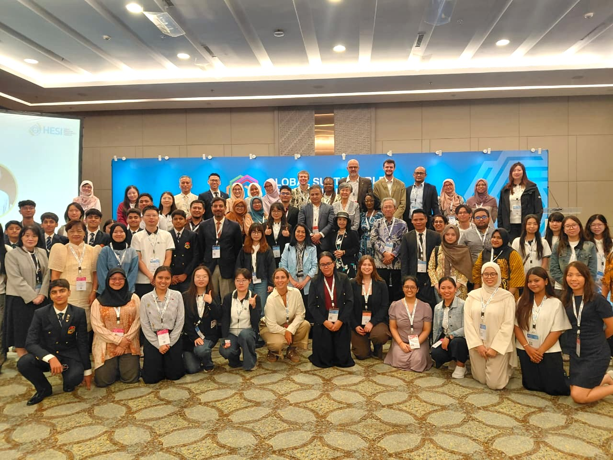

/>Reflections from the Global Sustainable Development Congress: Education, Support, and Meaningful Participation
I have always been enthusiastic about listening to diverse perspectives from different academic, cultural, linguistic, and personal backgrounds...
I have always been enthusiastic about listening to diverse perspectives from different academic, cultural, linguistic, and personal backgrounds. To me, the richness of perspectives creates greater opportunities to generate ideas and innovations with broader impacts. One meaningful opportunity came through my participation in the Global Sustainable Development Congress (GSDC) 2026 in Jakarta, particularly as a Student Delegate in the Higher Education Student Initiative Student Action Group (HESI SAG). This forum brought together students, academics, policymakers, and various stakeholders from around the world to discuss a fundamental question: how global challenges are translated into the unique social, cultural, political, and economic contexts of each country. Through these discussions, we sought to formulate a shared framework that is flexible enough to be adapted across different contexts while maintaining the same objective: advancing sustainable development by positioning students as key actors and young people more broadly as central drivers of change.
One of the most memorable discussions was regarding the importance of integrating sustainability into the education system. Sustainability can no longer be understood solely as an environmental issue, but rather as a framework of thinking that must be present throughout the entire educational process. Climate change, environmental degradation, the energy crisis, social inequality, and technological transformation are interconnected issues that cannot be resolved through a single academic discipline. Therefore, education is required to develop a multidisciplinary approach capable of equipping learners to face the complexities of the future.
However, when I reflected on this discussion within the Indonesian context, a more fundamental question arose: does our education system have sufficient capacity to carry out such a massive agenda?
Many teachers face increasing pressure. They are demanded to foster innovation, creativity, and the modernization of learning, while simultaneously instilling sustainability values in their students. At the same time, the necessary institutional support is often inadequately available. Issues regarding funding, system flexibility, and workloads become recurring obstacles in various discussions.
For example, sustainability education often requires media, methods, or activities that cannot be executed solely through conventional classroom learning. It requires projects, experiments, field observations, or collaborations with various parties. However, specific funding for such activities is not always available. Many educational institutions must reallocate their already limited budgets to support these programs. As a result, the implementation of sustainability often relies on the individual initiatives of teachers or schools, rather than on strong and sustainable systemic support.
A similar situation is felt by school and university students. In various forums, young people are encouraged to innovate, create impact, and become agents of change. In practice, however, the support provided often only appears when success is already visible. Acknowledgement, awards, and recognition are given after a program has been successfully implemented. Yet, the most crucial phase actually occurs long before that: when ideas are being designed, when risks are still high, and when uncertainty still dominates.
During those stages, what is needed is not merely appreciation, but tangible support in the form of funding, expert mentoring, facility access, administrative ease, and the space to experiment and learn from failure. Many youth initiatives stall not due to a lack of creativity, but because of minimal support during the initial phases of idea development.
Another issue relates to the educators' capacity to teach sustainability. In one session, it was revealed that more than 40 percent of educators do not yet feel confident integrating sustainability issues into their teaching. This hesitation arises because many subjects are considered to have no direct connection to environmental or sustainable development themes. Teachers of mathematics, statistics, history, and other fields often struggle to find common ground between the materials they teach and sustainability issues.
Yet, that is exactly where the greatest challenge and opportunity for future education lie. Sustainability does not have to be taught as a separate subject. It can be present through the learning context. Mathematics can discuss carbon emission and energy consumption data. Statistics can teach disaster risk analysis and social inequality. History can explain how resource exploitation shapes the development of human civilization. In other words, sustainability requires not only relevant learning texts but also a context capable of connecting knowledge with the reality of life.
An equally interesting discussion was about the future beyond 2030. The Sustainable Development Goals (SDGs) agenda has been the global development framework for more than a decade. However, the question that arises is: what will happen after 2030? Have these goals been successfully achieved? Or does the world actually need a new agenda that is more adaptive to continuously evolving challenges?
This question brought forth diverse perspectives from participants from various countries. I had the opportunity to discuss with students from Cadet College Hasan Abdal, Pakistan. They emphasized that sustainability must not be understood solely as the pursuit of economic growth or physical development. What is equally important is building community resilience in the face of various increasingly frequent crises, ranging from climate change to geopolitical uncertainty.
Another perspective came from colleagues at The Education University of Hong Kong (EdUHK). They raised an issue that has become increasingly relevant in recent years: the relationship between the development of artificial intelligence and energy consumption. Amidst the optimism surrounding AI as a solution to various problems, there are environmental consequences that often escape attention. The computing infrastructure supporting the development and use of AI requires massive amounts of energy. Therefore, the future challenge lies not only in how to develop increasingly advanced technology but also in how to ensure that this technology becomes more efficient and sustainable.
The discussion then evolved into the issue of inequality between developed and developing countries. For many nations in the Global South, including Indonesia, economic development still requires access to cheap, stable, and reliable energy. On the other hand, demands for a transition to clean energy continue to strengthen in various international forums.
In this context, sustainability is often not as simple as choosing between economic development and environmental protection. Many developing countries still face fundamental challenges in the form of limited energy access and infrastructure capacity. Indonesia, for instance, still has a much lower per capita electricity consumption compared to several neighboring countries. Meanwhile, the transformation toward a technology-based and electrified economy requires an increasingly larger energy supply. This dilemma is what makes the sustainability discourse always fraught with compromises, negotiations, and considerations of justice.
Among these various discussions, one thing that continuously emerged was the position of young people in decision-making. Almost everyone agreed that the younger generation is the primary stakeholder for the future of sustainability. Yet, a more critical question is whether that involvement is truly meaningful.
On many occasions, the voices of young people are indeed given space. We are invited to speak, express our aspirations, and even sit in various discussion forums. However, a space to speak does not always mean a space to influence decisions. Not infrequently, youth participation stops at a symbolic level: present as representation, but lacking real influence on the direction of policies or program implementation.
Therefore, the challenge that needs to be addressed moving forward is not merely how to increase youth participation, but how to ensure that this participation has real consequences. The education sector, governments, and various institutions need to move beyond symbolism toward mechanisms that allow the ideas of young people to be genuinely accommodated, tested, and realized.
Ultimately, the experience of attending this forum made me realize that sustainability is not solely an issue of technology, environment, or policy. It is also a matter of intergenerational relations, power distribution, and the courage to build systems that support change. We often ask teachers to innovate without providing sufficient support. We ask university students to create impact without providing a safe space to experiment. We invite young people to talk about the future, but are not necessarily willing to hand over a portion of the decision-making space to them.
Perhaps this is the great work that still needs to be completed after 2030. Not just formulating a new agenda, but ensuring that those who will live the longest with the consequences of that agenda are genuinely involved in the process of shaping it.